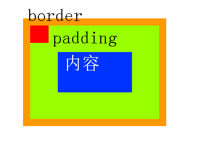

元素脱离标准文档流：
- 浮动
- 绝对定位
- 固定定位
一、浮动
用法：float: left;
- 浮动的元素脱标;
- 浮动的元素互相贴靠;
- 浮动的元素有“字围”效果:标准流中的文字不会被浮动的盒子遮挡住。
- 收缩
浮动的清除（指的是清除浮动与浮动之间的影响）
方法1：给浮动元素的祖先元素加高度
方法2：clear:both;(不允许左侧和右侧有浮动对象)
方法3：隔墙法
两个div中间用一个新的div隔开，然后给这个新的div设置clear: both;属性；同时，既然这个新的div无法设置margin属性，我们可以给它设置height，以达到margin的效果内墙法：(一个父亲是不能被浮动的儿子撑出高度的)

方法4：overflow:hidden;
这个属性的意思是“溢出隐藏”兼容性
1.IE 6不支持微型盒子:IE6不支持小于12px的盒子
IE6留了一个后门：只要给css属性之前，加上下划线，这个属性就是IE6的专有属性。_font-size: 0px;
2.IE6不支持用overflow:hidden;来清除浮动
overflow:hidden;的本意，就是让溢出盒子的border的内容隐藏，这个功能是IE6兼容的。不兼容的是overflow:hidden;清除浮动的时候。overflow:hidden;
_zoom:1;
二、绝对定位
定义横纵坐标。原点在父容器的左上角或左下角。横坐标用left表示，纵坐标用top或者bottom表示。
position: absolute; /*绝对定位*/
left: 10px; /*横坐标*/
top/bottom: 20px; /*纵坐标*/
绝对定位的盒子脱离了标准文档流。所有的标准文档流的性质，绝对定位之后都不遵守了。
绝对定位之后，标签就不区分所谓的行内元素、块级元素了，不需要display:block就可以设置宽、高了。
绝对定位的参考点（重要）
- 如果用top描述，那么参考点就是页面的左上角，而不是浏览器的左上角：
- 如果用bottom描述，那么参考点就是浏览器首屏窗口尺寸（好好理解“首屏”二字），对应的页面的左下角：
以盒子为参考点
一个绝对定位的元素，如果父辈元素中也出现了已定位（无论是绝对定位、相对定位，还是固定定位）的元素，那么将以父辈这个元素，为参考点。
- 要听最近的已经定位的祖先元素的，不一定是父亲，可能是爷爷：
- 不一定是相对定位，任何定位，都可以作为儿子的参考点：
- 绝对定位的儿子，无视参考的那个盒子的padding：
子绝父绝、子绝父相、子绝父固，都是可以给儿子定位的。但是在工程上，如果子绝、父绝，没有一个盒子在标准流里面了，所以页面就不稳固，没有任何实战用途。
“子绝父相”有意义：这样可以保证父亲没有脱标，儿子脱标在父亲的范围里面移动。于是，工程上经常这样做：父亲浮动，设置相对定位（零偏移），然后让儿子绝对定位一定的距离。

工程应用：
广东深圳宝安区建安一路海雅缤纷城4楼
【海雅缤纷城】万达影城（深圳海雅广场4楼）
单人电影票，可观看2D
让绝对定位中的盒子在父亲里居中
如果盒子是绝对定位的，此时已经脱标了，如果还想让其居中（位于父亲的正中间），可以这样做：
div {
width: 600px;
position: absolute; 绝对定位的盒子
left: 50%; 首先，让左边线居中
top: 0;
margin-left: -300px; 然后，向左移动宽度（600px）的一半
}
三、固定定位
就是相对浏览器窗口进行定位。无论页面如何滚动，这个盒子显示的位置不变。(IE6不兼容)
position: fixed;
bottom: 100px;
right: 30px;
用途：
- 网页右下角的“返回到顶部”
- 顶部导航条
表示谁压着谁。数值大的压盖住数值小的。
- 属性值大的位于上层，属性值小的位于下层。
- z-index值没有单位，就是一个正整数。默认的z-index值是0。
- 如果大家都没有z-index值，或者z-index值一样，那么在HTML代码里写在后面，谁就在上面能压住别人。定位了的元素，永远能够压住没有定位的元素。
- 只有定位了的元素，才能有z-index值。也就是说，不管相对定位、绝对定位、固定定位，都可以使用z-index值。而浮动的元素不能用。
- 从父现象：父亲怂了，儿子再牛逼也没用。意思是，如果父亲1比父亲2大，那么，即使儿子1比儿子2小，儿子1也能在最上层。
z-index属性的应用还是很广泛的。当好几个已定位的标签出现覆盖的现象时，我们可以用这个z-index属性决定，谁处于最上方。也就是层级的应用。
注意：（1）必须有定位（除去static）（2）用z-index来控制层级数。
相对定位让元素相对于自己原来的位置，进行位置调整（可用于盒子的位置微调）。
position: relative;/*相对定位：相对于自己原来的位置*/
left: 50px;/*left横坐标：正值表示向右偏移，负值表示向左偏移*/
top: 50px;/*top纵坐标：正值表示向下偏移，负值表示向上偏移*/
相对定位不脱标，老家留坑，别人不会把它的位置挤走。
用途：
- 微调元素
- 做绝对定位的参考，子绝父相